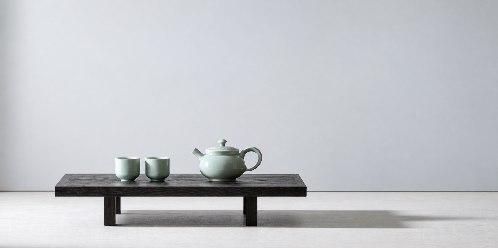
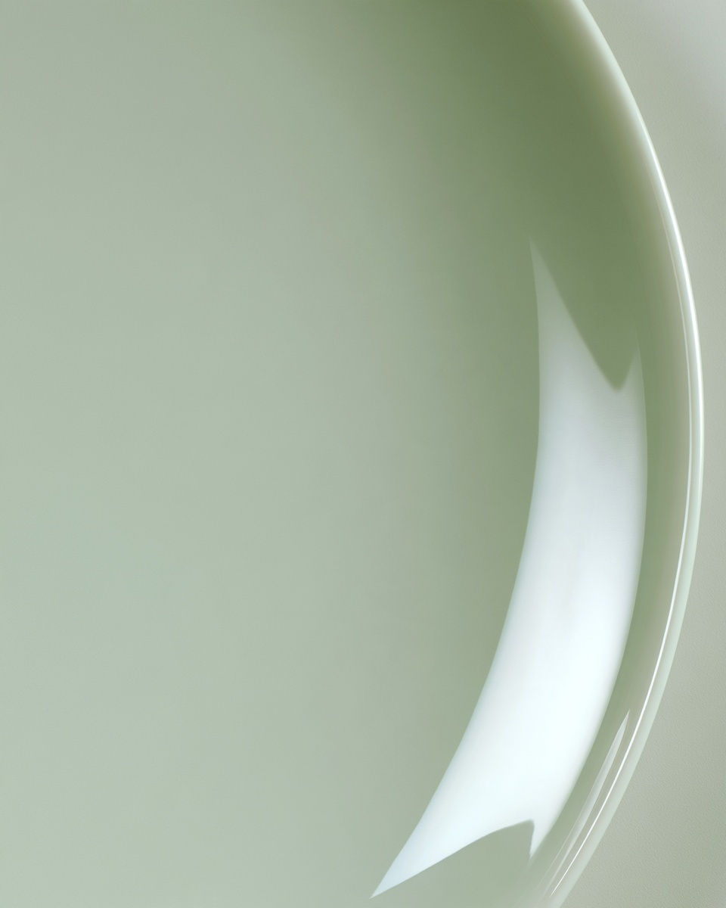

다구다구 살펴보기
청자 다관 01
청자
꼭 맞는 뚜껑, 굽은 손잡이, 짧은 주둥이를 갖춘 둥근 다관. 들고 따르고 건네는 손길을 따라 익숙한 형태를 다듬었습니다.
소재와 형태
청자로 구성한 다경의 콘셉트 컬렉션입니다.
사용과 관리
부드럽게 씻고 충분히 말려 주세요. 급격한 온도 변화와 거친 세척 도구는 피해 주세요.


함께 나누는 형태.
손잡이의 곡선과 뚜껑이 몸체에 닿는 자리. 작은 사물 하나가 익숙한 움직임에 마음을 더합니다.